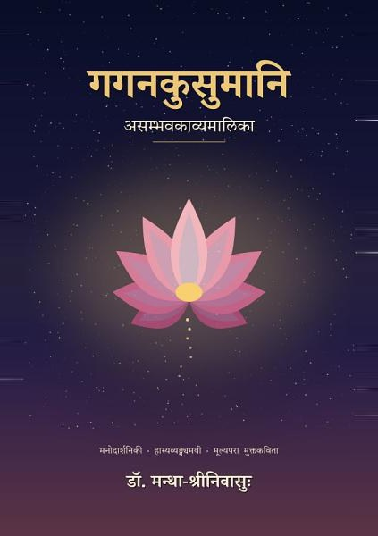

गगनकुसुमानि
असम्भवकाव्यमालिका
Google PlayLibraryकिं गगने पुष्पं विकसति? किं शशस्य शृङ्गं प्ररोहति? किं मृगतृष्णायां जलं लभ्यते?
भारतीयशास्त्रैः ‘असम्भवम्’ इति मुद्राङ्कितानि गगनकुसुम-शशशृङ्ग-वन्ध्यासुत-मृगतृष्णाजलादीनि अलीकानि कविः अद्यतनजीवनस्य दर्पणे दर्शयति। यथासमयम् आरब्धा सभा, संक्षिप्तं भाषणम्, उत्कोचरहितं कार्यालयम्, दूरवाणीं विना एको दिवसः, असूयारहितो बन्धुः, एतान्यपि अस्माकं युगस्य गगनकुसुमानि।
पञ्चाशत् मुक्तकविताः पञ्चसु खण्डेषु: अलीकवनम्, विपर्ययवीथी, न्यायनिकुञ्जः, लोकलीला, युगदर्पणम्। प्रत्येकस्याः कवितायाः शिरसि भर्तृहरि-कालिदास-गीता-उपनिषदादिभ्यः काचित् सूक्तिः लौकिकन्यायो वा दीप इव द्योतते।
उपमासौन्दर्यं पदलालित्यम् अर्थगौरवं चैतासां कवितानां प्राणाः। साक्षान्निन्दा नास्ति; चित्रमेव हासयति, हास एव विचारयति। प्रतिपादं यतिः प्रतिचतुष्पदि अन्त्यानुप्रासश्च इति पठनं गानमिव प्रवहति। नेदम् अनुवादकाव्यम्; अनेनैव भावबीजेन तेलुगुभाषायां ‘గగనకుసుమాలు’ इति युग्मग्रन्थः पृथक् प्रणीतः।